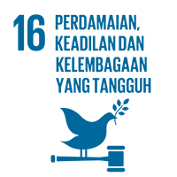
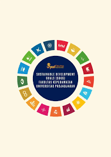
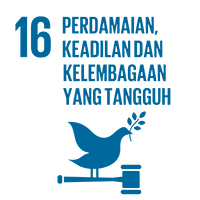
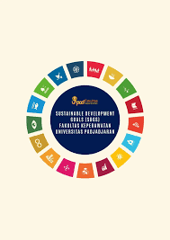

SDGs 16___Perdamaian, Keadilan, dan Kelembagaan yang Tangguh
SDGs 16: Perdamaian, Keadilan, dan Kelembagaan yang Tangguh — adalah fondasi penting bagi pembangunan berkelanjutan. Tanpa perdamaian dan sistem hukum yang adil, kemajuan ekonomi dan kesejahteraan sosial sulit dicapai secara merata. Tujuan Pembangunan Berkelanjutan (SDGs) ke-16, yang menekankan pentingnya perdamaian, keadilan, dan kelembagaan yang kuat, menjadi pilar utama dalam mewujudkan pembangunan yang berkelanjutan dan inklusif. Tanpa adanya stabilitas keamanan, penegakan hukum yang adil, serta lembaga yang transparan dan akuntabel, berbagai upaya untuk meningkatkan kesejahteraan masyarakat, mempercepat pertumbuhan ekonomi, dan menciptakan pemerataan kesempatan akan sulit berjalan secara efektif.
Oleh karena itu, SDGs 16 tidak hanya berfungsi sebagai pendukung tujuan lainnya, tetapi juga sebagai prasyarat penting bagi terciptanya lingkungan yang kondusif bagi pembangunan di semua sektor lingkungan. Selain menjadi fondasi bagi pembangunan berkelanjutan, perdamaian dan kelembagaan yang tangguh juga berperan penting dalam menciptakan keadilan sosial. Keadilan tidak hanya berarti penegakan hukum yang adil, tetapi juga kesetaraan akses terhadap layanan publik, pendidikan, dan peluang ekonomi. Ketika masyarakat merasa diperlakukan secara adil, tingkat kepercayaan terhadap pemerintah meningkat, dan partisipasi publik dalam proses pembangunan menjadi lebih aktif. Sebaliknya, ketidakadilan dapat menimbulkan ketegangan sosial, konflik internal, dan ketidakstabilan politik yang menghambat kemajuan nasional. Hal ini semakin jelas ketika melihat keseluruhan 17 jenis Tujuan Pembangunan Berkelanjutan, mulai dari pengentasan kemiskinan (SDGs 1), tanpa kelaparan (SDGs 2), kesehatan yang baik (SDGs 3), pendidikan berkualitas (SDGs 4), kesetaraan gender (SDGs 5), air bersih dan sanitasi (SDGs 6), energi bersih dan terjangkau (SDGs 7), pekerjaan layak dan pertumbuhan ekonomi (SDGs 8), industri dan inovasi (SDGs 9), berkurangnya kesenjangan (SDGs 10), kota dan komunitas berkelanjutan (SDGs 11), konsumsi dan produksi yang bertanggung jawab (SDGs 12), penanganan perubahan iklim (SDGs 13), ekosistem laut (SDGs 14), ekosistem darat (SDGs 15), hingga kemitraan global (SDGs 17). Seluruh tujuan ini pada dasarnya membutuhkan kondisi sosial-politik yang stabil, aman, dan berkeadilan agar dapat diwujudkan secara optimal, sehingga SDGs 16 menjadi fondasi bagi keberhasilan tujuan-tujuan lainnya. Stabilitas keamanan menjadi syarat mutlak bagi pembangunan ekonomi yang berkelanjutan. Negara-negara yang mengalami konflik bersenjata atau ketidakstabilan politik cenderung mengalami penurunan investasi, kerugian infrastruktur, dan hilangnya sumber daya manusia yang potensial. Dampak jangka panjang dari konflik sering kali menyebabkan kemiskinan meningkat, layanan publik terganggu, dan kesenjangan sosial melebar. Oleh karena itu, penguatan keamanan dan pencegahan konflik menjadi bagian integral dari upaya mencapai SDGs 16.
MARI CIPTAKAN DUNIA YANG LEBIH DAMAI DAN BERKEADILAN, MULAI DARI LANGKAH KECILMU HARI INI UNTUK MENDUKUNG SDGS 16!
 


